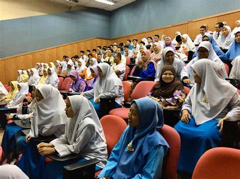

Matrikulasi adalah kegiatan pembelajaran yang dilakukan untuk memenuhi kekurangan dalam hal pengetahuan, ketrampilan dan sikap yang berfungsi
untuk mengetahui kemampuan awal/ pemetaan kemampuan awal peserta didik yang diperlukan untuk mengikuti kegiatan pembelajaran.
Hari Senin, 13 Agustus 2018, CyberLabs mendapatkan kesempatan untuk mengisi program matrikulasi pembelajaran kompetensi
tahun ajaran 2018/2019 di SMK Wikrama Garut.
Perlu diketahui bahwa sebelum masuk di pembelajaran baru tahun 2022-2023, ada kegiatan spesial yaitu MATRIKULASI.
Matrikulasi adalah kegiatan pembelajaran yang dilakukan untuk memenuhi kekurangan dalam hal pengetahuan, ketrampilan dan sikap yang berfungsi
untuk mengetahui kemampuan awal/ pemetaan kemampuan awal peserta didik yang diperlukan untuk mengikuti kegiatan pembelajaran. Waktu pelaksanaan
Matrikulasi di SMK Wikrama 1 Garut yaitu selama 1 bulan dari akhir Juli - Agustus 2022.
Program ini bertujuan untuk membekali kompetensi peserta didik agar siap mengikuti pembelajaran pada kelas XII
dan juga memberikan gambaran mengenai karir yang dapat mereka lakukan setelah lulus.Dalam kesempatan kali ini CyberLabs memberikan bekal
untuk menjadi seorang Technopreneur.Technopreneur sendiri memiliki arti sebagai suatu peluahng usaha ang memanfaatkan teknologi informasi
yang berkembang sangat pesat dan juga dalam bidang ekonomi dapat menuntut para pengusaha untuk selalu upgrade usahanya untuk menjadi
lebih baik dapat bersaing di era teknologi ini.
